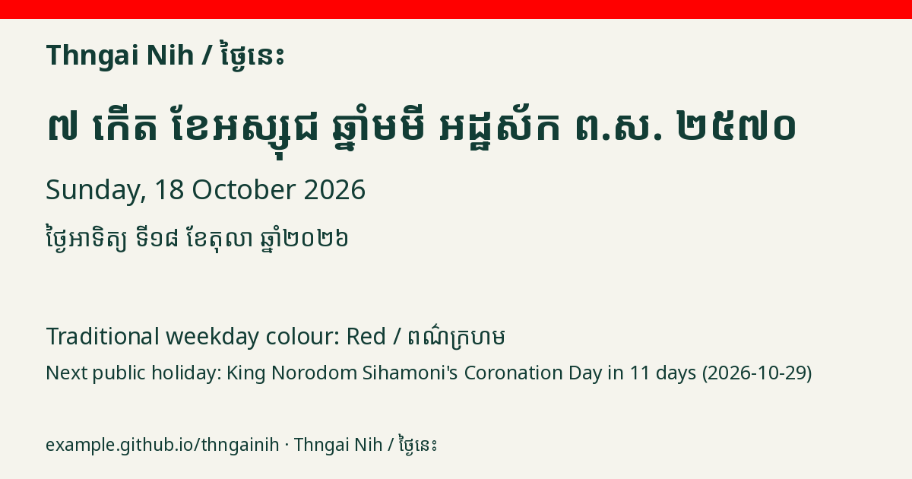

Sunday, 18 October 2026
ថ្ងៃអាទិត្យ ទី១៨ ខែតុលា ឆ្នាំ២០២៦
៧ កើត ខែអស្សុជ ឆ្នាំមមី អដ្ឋស័ក ព.ស. ២៥៧០
7th waxing day of Assoch · Year of the Horse · B.E. 2570
Traditional weekday colour: Red / ពណ៌ក្រហម
Next public holiday: King Norodom Sihamoni's Coronation Day in 11 days (2026-10-29)
ថ្ងៃឈប់សម្រាកបន្ទាប់៖ ទិវាគ្រងរាជ្យសម្បត្តិ នៅសល់ 11 ថ្ងៃ (2026-10-29)
Sub-Decree 167/198 ANKr.BK